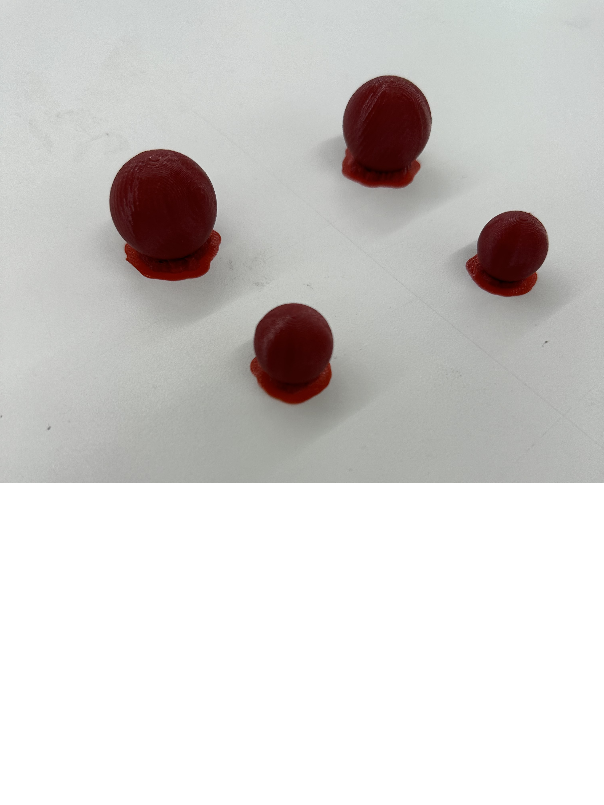
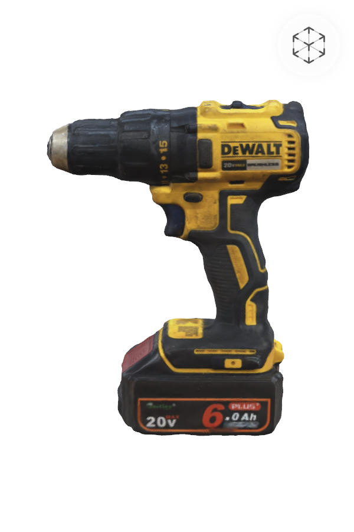

For 3D print assignment I decied to print the spheres since it can't be printed by subtructive methods and I will use it to test my final project. Those are the substitue for the sphere that is going to hold the seed. I will test dropper mechanism with these spheres. I printed in two different sizes since in reality those spheres are not consitent in shape, so it is more realistic in this way.

This is the files for stl and gcode
I used photogrammetry to scan a drill in the maker space. It yielded very good result, so I didn't try any other scanning programs.

Design and print something that cannot be made easily through subtractive methods. Include a Fusion file (eg. .f3z), STL of your object, and sliced gcode in your documentation.
This is how you create a link to download a file.